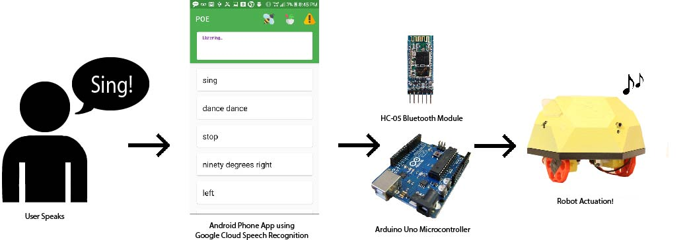

Software & Firmware Subsystems

The phone app as it is now is an Android app that has a button to connect to each robot through Bluetooth, and a “warn” button to make Bluetooth disconnect. The UI was built on Google Cloud Speech API’s Android demo, and was designed, like our robots, to be playful, aesthetic, and easy to use. When someone speaks to the phone, the app runs speech recognition while listening, and displays the results on the screen in cards, so that the user can see what their previous commands are. If the text recognized contains a command, the app will send that command to the Bluetooth board that it’s connected to, and display a pop-up message that says “Sent to BT!” to inform the user that it worked.
In our UI, there are three buttons at the top for bluetooth configuration. The bee icon will connect you to the bee robot BT board, the dragon connects to the dragon robot BT board, and the caution icon will disconnect the phone from all Bluetooth boards. If you are already connected, trying to connect again will result in a pop-up saying “Already Connected”. If you are newly connecting to a robot, the app will display “Connected to [bee or dragon]!”. The disconnection button is handy for when you are switching robots, or lose connection.
A big barrier to ease of gameplay for us was the delay between someone speaking a command and the robot actuating it. In our first sprint, someone would say “left”, pray that the app didn’t think “lef” or “let”, and then wait over 6 seconds for the robot to start turning left. This was not a super exciting game experience. In order to address this problem, we took many steps to optimize the run time of Speech recognition in the app, and to speed up the Bluetooth sending/receiving from the app to the arduino. In the end, our delay was shaved down to 1-2 seconds, and the app sent the right commands more consistently. Read about how we minimized delay and improved accuracy with Streaming Speech Recognition, Async Tasks (threading), word-filtering, and AT Commands here!
The Arduino is the part of the robot which takes in commands from the phone and moves the motors, shoots the IR LED, turns the visible laser, keeps track of lives on and senses being shot. We are using an Adafruit V2 Motorshield, and connecting the Arduino's 5V, GND, A2,A4, D3, D10, D11 and D12 pins. The libraries which we are using are the motorshield library for the V2 MotorShield and SoftwareSerial for Bluetooth communication.
In the end, we had two final arduino ino files. One file controls the bee and the other controls the dragon. The reason why we have two different ino files for them is because we are using two different motors for the two different robots, and the motors turn at different speeds.
Besides specific settings for the motor speeds, the two files are essentially the same and we can describe them as one. The file starts with including necessary files for the two libraries we are using and creating variables, like an integer variable for life counts which initializes at three. We include helper functions turn the IR LED on and off. We also assign the specific movements which our robots can move (left, right) to their own functions. Here is where the two ino files differ. We timed and calculated both motor types spinning so that we knew how long it took the motors to spin one degree. Based on this, we created functions to turn left or right at forty-five, ninety, or one-hundred eighty degrees. These functions work by turning the motor speed on and adding the appropiate delay, which we calculated to give the right degree of turn. Another function which we created is to shoot. In this function, we turn the visible laser on first, shoot oscillating IR LED light, and turn the visible laser off. The point of the laser is for the user to get an understanding of where the IR LED is hitting.
In the void loop, we start off by checking if the robot has zero lives. If it does, then we exit out of the void loop, essentially turning off all robot functionality. If the robot is not out of lives, then we read the analog input of the IR sensors. If the sensors read values under 100, then the robots are set to spin around, to indicate visually that they have been hit, and the life count is subtracted by one.
When all of that is resolved, the next step in the void loop is to listen to the serial port while it is available. We are using a serial through the SoftwareSerial library, which allows us to use digital pins 10 and 11 instead of pins 0 and 1 for communication with the Bluetooth. Pins 0 and 1 are connected to hardware which enables serial communication, but with the SoftwareSerial library, we can do the same with other digital pins. It also allows us to use the 9600 baud rate, instead of the 38,400 baud rate which is used by serial communication. The serial which we are listening to is the input from the Bluetooth and we are reading strings received from the Serial port. When the string is a string of non-zero value, we save the input to an already defined variable named "voice". We then check that this string matches one of our commands with if statements testing for every command. If the string matches one of the strings we set in our if statements, the Arduino calls the functions in the if statement, which are the helper functions we defined in the beginning and contain motion or shooting. At the end of the void loop, we reset the variable "voice" to an empty string and iterate over the void loop again.
In this section we will discuss the bluetooth connection between the arudino and the phone app that our team created. The electrical and software components of the bluetooth module consist of the bluetooth module, arduino and code within the arduino and phone application. Each of these components must interact correctly to make communcation between the user and the robot as smooth as possible.
Each of the robots used an HC-05 bluetooth module to communicate with the phone appplication. The module itself needed between 3.3 and 5 volts to work properly. The bluetooth module initially only transmits data, so we needed to use AT commands to put it into slave mode. This would make the bluetooth module only recieve data and relay it to the arduino instead of trying to send it. We also had to wire the TX and RX pins of the bluetooth module to I/O pins of the arduino that we had specified to act as TX and RX pins within the arduino code using the Software Serial library. The TX and RX pins recievedata as bytes and translates that data as strings or chars within the serial terminal. If these two connections are not wired properly, the arduino will not recieve the voice commands.
Within the arudino code, we needed to specify where the arduino would be receiving data and the formata that the data would be in. We caused the software serial library to create a second serial terminal that would allow the arduino to communicate with the bluetooth module. A second serial terminal is needed because the arduino's default serial terminal has a set baudrate that is too low for the bluetooth module. The arduino reads the output on the serial monitor as a string. The arduino uses these strings to decide which command to run.
The phone app has the code for connecting the phone to the bluetooth module within a seperate thread than the voice recognition of the software because having them both in the main thread created large delays and caused the application to freeze. The bluetooth is in a sub-thread that runs in the background while the voice recognition is in the main thread that recieves most of the memory and power. The app has buttons that connect to the bluetooth module for each robot based upon the UID of the module. After it connects, the app creates a bluetooth socket, which is a communication thread that allows two devices to relay data to one another. Because the bluetooth module is a slave that only recieves data, the phone application only needs to convert the text it has to bytes and sen it through the connection.
The bluetooth connection still has many bugs. The arduino reliably recieves the commands that are sent to it from the phone app through the bluetooth module, but there are many instances in which it does not execute the command. There is also an issue with the dragon robot that has the bluetooth module disconnect from the phone after a few seconds. We have tried many differnt methods of debugging these problems, but we have been unable to find solutions. For the first issue, we believe the most likely issue is that the arduino had a large backlog of commands that became so long that the arduino did not have time to react to them all and began to skip over them. The arduino could have also become unresponsive because it did not get the command at the right time during the loop. As for the second issue, we believe that the bluetooth module is broken in some way and needs to be replaced.